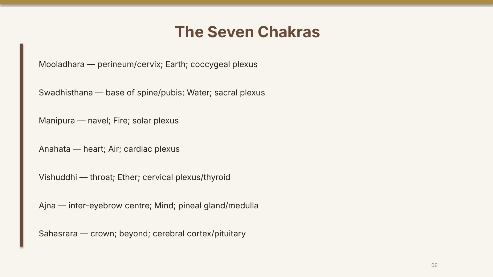
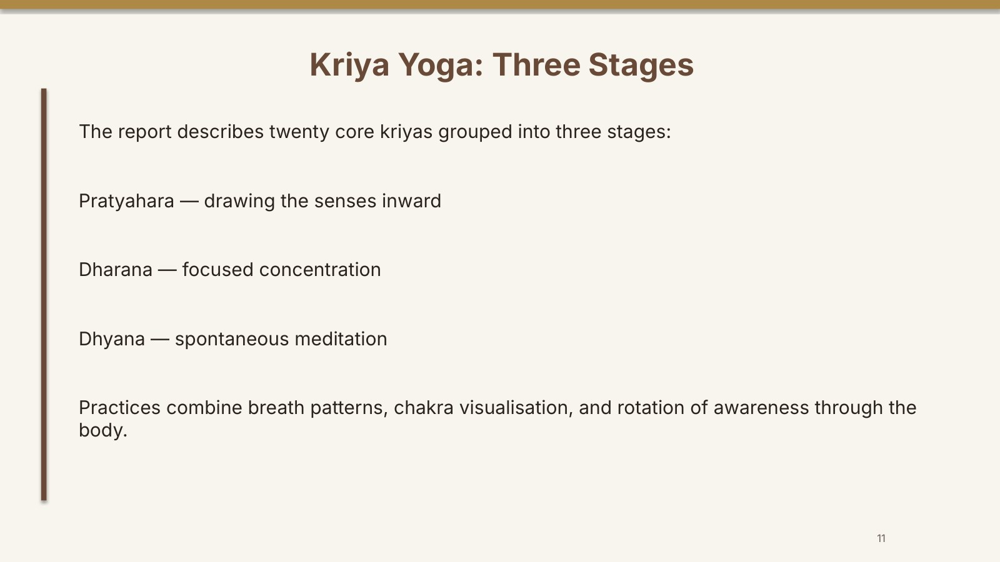
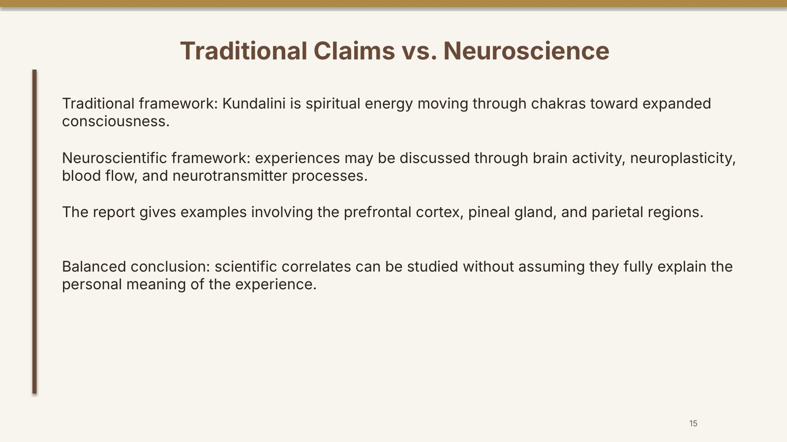
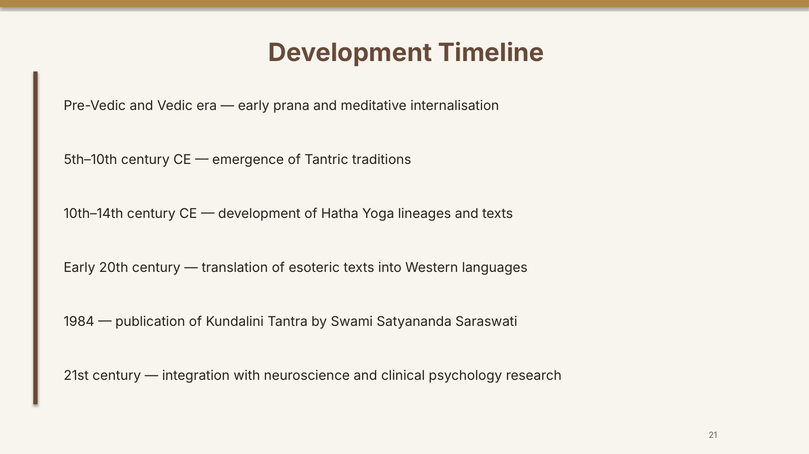

Aim
Study the philosophy, energy anatomy, and practices described in Kundalini Tantra and compare them with neuroscience and physiology.
An analytical academic report on the textual and practical foundations
Kundalini Yoga: An Exploration is an analytical academic report on the textual and practical foundations of Kundalini Yoga, based on the teachings of Swami Satyananda Saraswati.
The report is presented as a 22-slide deck. It moves from history and philosophy, through practice and safety, to a comparison between traditional yogic models and modern neuroscience.
Study the philosophy, energy anatomy, and practices described in Kundalini Tantra and compare them with neuroscience and physiology.
| Chakra | Location | Element | Associated plexus or gland |
|---|---|---|---|
| Mooladhara | Perineum/cervix | Earth | Coccygeal plexus |
| Swadhisthana | Base of spine/pubis | Water | Sacral plexus |
| Manipura | Navel | Fire | Solar plexus |
| Anahata | Heart | Air | Cardiac plexus |
| Vishuddhi | Throat | Ether | Cervical plexus/thyroid |
| Ajna | Inter-eyebrow centre | Mind | Pineal gland/medulla |
| Sahasrara | Crown | Beyond | Cerebral cortex/pituitary |
Left side; cool, inward, reflective qualities; compared in the report with the parasympathetic nervous system.
Right side; warm, active, vital qualities; compared with the sympathetic nervous system.
Central channel; associated with neutrality, spiritual awareness, and central integration.
The traditional framework describes balancing Ida and Pingala so energy can enter Sushumna.
Important limitation: direct scientific studies of Kundalini awakening remain rare; more careful research is needed.
Kundalini is spiritual energy moving through chakras toward expanded consciousness.
Experiences may be discussed through brain activity, neuroplasticity, blood flow, and neurotransmitter processes.
The report gives examples involving the prefrontal cortex, pineal gland, and parietal regions.
Balanced conclusion: scientific correlates can be studied without assuming they fully explain the personal meaning of the experience.
| Component | Description |
|---|---|
| Preparation | Balanced lifestyle, emotional stability, nourishing diet, ethical conduct, and self-discipline. |
| Asana | Supports physical preparation and comfortable meditation. |
| Pranayama | Includes practices such as Nadi Shodhana and Bhastrika. |
| Mudra and bandha | Used in the traditional framework to direct and contain pranic energy. |
| Meditation/Kriya | Breath, awareness, chakra visualisation, concentration, and progressive inward attention. |
The report describes twenty core kriyas grouped into three stages:
Stage 1
Drawing the senses inward.
Stage 2
Focused concentration.
Stage 3
Spontaneous meditation.
Practices combine breath patterns, chakra visualisation, and rotation of awareness through the body.
Establish stable routines and foundational practices before intensive work; use qualified guidance.
Combine scientific rigour with openness; avoid both uncritical enthusiasm and dismissive scepticism.
fMRI and high-density EEG during specific Kriya sequences, and investigation of vagus nerve, gut-brain, and hormone-system relationships.
Practical applications discussed include secular breathing and mindful-movement programmes for stress and wellbeing.
| Term | Meaning |
|---|---|
| Asana | Steady, comfortable posture |
| Pranayama | Methods for managing and expanding vital life force |
| Mudra | Gesture used to route/seal pranic energy |
| Bandha | Internal muscular lock |
| Kriya | Structured movement, breath, and awareness sequence |
| Chakra | Non-physical energy junction |
| Nadi | Subtle channel |
| Shakti | Universal creative energy |
| Period | Development |
|---|---|
| Pre-Vedic and Vedic era | Early prana and meditative internalisation |
| 5th–10th century CE | Emergence of Tantric traditions |
| 10th–14th century CE | Development of Hatha Yoga lineages and texts |
| Early 20th century | Translation of esoteric texts into Western languages |
| 1984 | Publication of Kundalini Tantra by Swami Satyananda Saraswati |
| 21st century | Integration with neuroscience and clinical psychology research |



